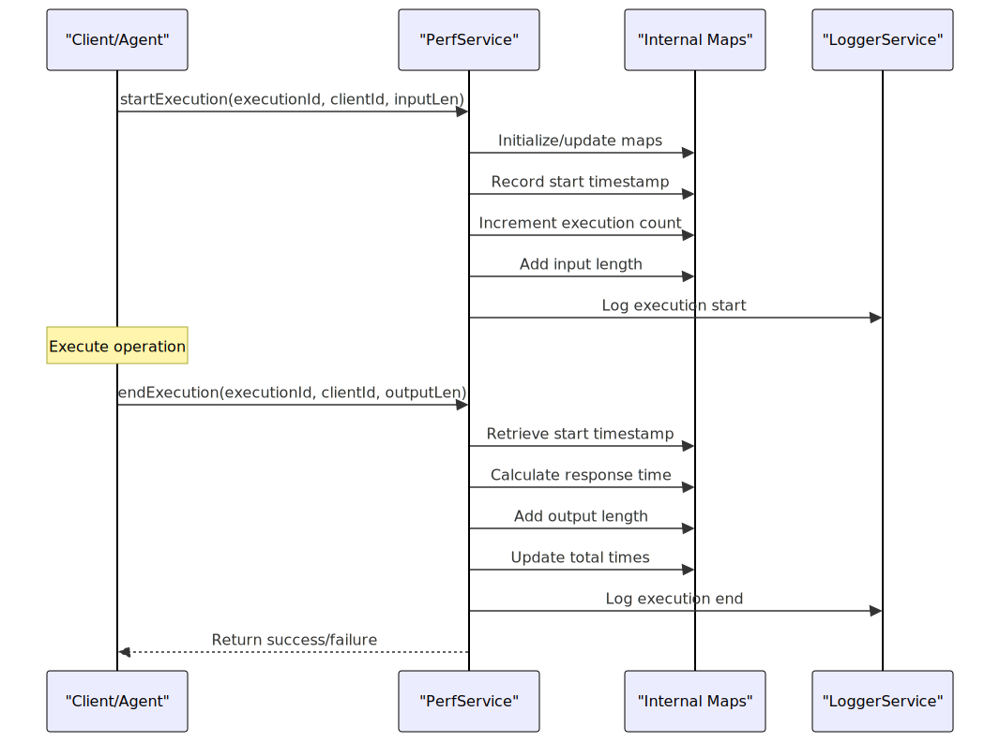

This document covers the performance monitoring system in agent-swarm-kit, which tracks execution metrics, response times, and system performance across client sessions and agent operations. The monitoring system provides detailed performance analytics for both individual clients and system-wide aggregation.
For information about AI completion adapters and their performance optimizations, see Completion Adapters. For system introspection and documentation generation, see Documentation Generation.
The performance monitoring system centers around the PerfService class, which tracks execution metrics throughout the agent swarm lifecycle. It integrates with the dependency injection container to monitor client sessions, agent executions, and system-wide performance patterns.
The system captures metrics including:
The performance monitoring system follows a layered architecture within the service framework:

The PerfService class manages performance tracking through several key components:

The system tracks comprehensive performance metrics across multiple dimensions:
| Metric Category | Client-Level Metrics | System-Level Metrics |
|---|---|---|
| Execution Counts | executionCount |
totalExecutionCount |
| Response Times | executionTimeTotal, executionTimeAverage |
totalResponseTime, averageResponseTime |
| Data Volume | executionInputTotal, executionOutputTotal |
Aggregated across clients |
| Data Throughput | executionInputAverage, executionOutputAverage |
Calculated per client |
| Session Data | sessionMemory, sessionState |
Not applicable |
| Temporal Context | Tracked per execution | momentStamp, timeStamp, date |
The PerfService maintains several internal maps for tracking metrics:
executionScheduleMap: Tracks start timestamps for active executions per clientexecutionCountMap: Maintains execution counts per clientexecutionInputLenMap: Tracks cumulative input data sizesexecutionOutputLenMap: Tracks cumulative output data sizesexecutionTimeMap: Accumulates total execution times per clientPerformance monitoring integrates tightly with the agent execution lifecycle through start/end tracking:

The startExecution method initializes tracking for a new execution:
// From PerfService.startExecution
const startTime = Date.now();
if (!this.executionScheduleMap.has(clientId)) {
this.executionScheduleMap.set(clientId, new Map());
}
// Initialize other maps and increment counters
The endExecution method calculates metrics and updates totals:
// From PerfService.endExecution
const startTime = clientStack.pop()!;
const endTime = Date.now();
const responseTime = endTime - startTime;
this.totalResponseTime += responseTime;
this.totalRequestCount += 1;
The system uses two primary data structures for performance reporting:
System-wide performance aggregation:
interface IPerformanceRecord {
processId: string; // Unique process identifier
clients: IClientPerfomanceRecord[]; // Per-client records
totalExecutionCount: number; // System-wide execution count
totalResponseTime: string; // Formatted total time
averageResponseTime: string; // Formatted average time
momentStamp: number; // Days since epoch (UTC)
timeStamp: number; // Seconds since midnight UTC
date: string; // ISO date string
}
Client-specific performance details:
interface IClientPerfomanceRecord {
clientId: string;
sessionMemory: Record<string, unknown>; // From MemorySchemaService
sessionState: Record<string, unknown>; // Computed client state
executionCount: number;
executionInputTotal: number;
executionOutputTotal: number;
executionInputAverage: number; // Calculated average
executionOutputAverage: number; // Calculated average
executionTimeTotal: string; // Formatted with msToTime
executionTimeAverage: string; // Formatted with msToTime
}
The performance monitoring system integrates with session state and memory systems to provide comprehensive client context:

The computeClientState method aggregates state information:
// From PerfService.computeClientState
const swarmName = this.sessionValidationService.getSwarm(clientId);
const agentName = await this.swarmPublicService.getAgentName(
METHOD_NAME_COMPUTE_STATE, clientId, swarmName
);
const result: Record<string, unknown> = {
swarmStatus: { swarmName, agentName },
policyBans: Object.fromEntries(policyBans),
// ... state values from agents
};
The system uses several utility functions for data processing and formatting:
Converts milliseconds to human-readable time format:
// From msToTime utility
export const msToTime = (s: number) => {
const ms = s % 1000;
s = (s - ms) / 1000;
const secs = String(s % 60);
// ... format as "HH:MM:SS.ms"
};
Time formatting is applied to duration metrics:
// From PerfService.toClientRecord
return {
// ... other fields
executionTimeTotal: msToTime(executionTimeTotal),
executionTimeAverage: msToTime(executionTimeAverage),
};
Performance monitoring integrates with the global configuration and logging systems:
Performance logging is controlled by global configuration:
// From PerfService methods
GLOBAL_CONFIG.CC_LOGGER_ENABLE_INFO &&
this.loggerService.info(`perfService startExecution`, {
executionId, clientId, inputLen
});
Performance records include process identification:
// From PerfService.toRecord
return {
processId: GLOBAL_CONFIG.CC_PROCESS_UUID,
// ... other fields
};
The system provides cleanup methods for client termination:
// From PerfService.dispose
public dispose = (clientId: string): void => {
this.executionScheduleMap.delete(clientId);
this.executionCountMap.delete(clientId);
this.executionInputLenMap.delete(clientId);
this.executionOutputLenMap.delete(clientId);
this.executionTimeMap.delete(clientId);
};
The monitoring system works alongside performance optimizations in the Adapter class, which implements execution pooling and retry logic for AI completions:
// From Adapter class constants
const EXECPOOL_SIZE = 5; // Maximum concurrent executions
const EXECPOOL_WAIT = 0; // Delay between executions
const RETRY_COUNT = 5; // Maximum retry attempts
const RETRY_DELAY = 5_000; // Delay between retries
Adapter operations can be monitored through the performance system when integrated with client operations that call startExecution and endExecution.